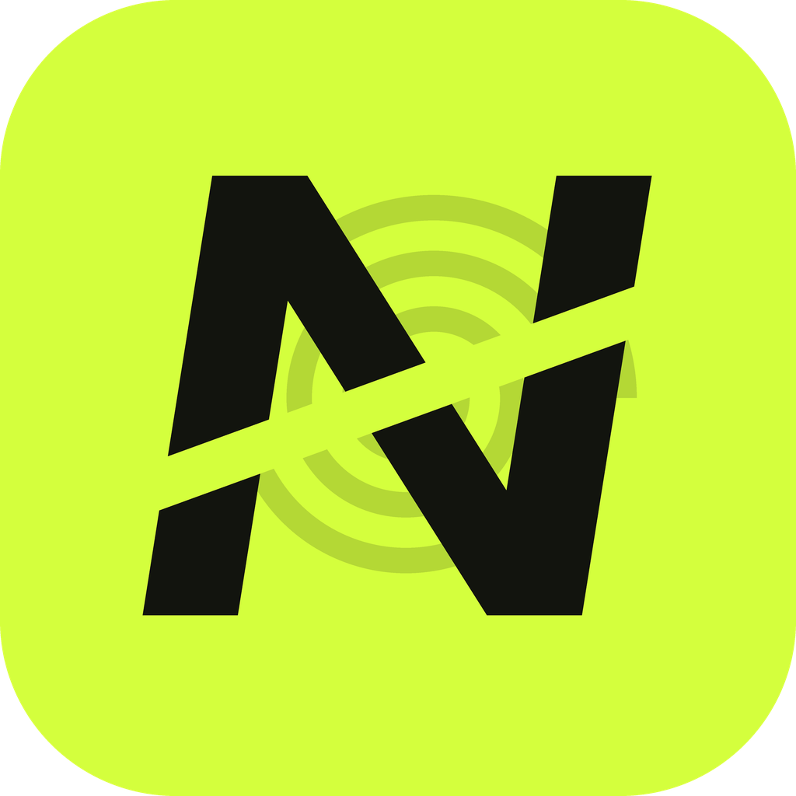

Añádeme en Nowys
Toca el botón para abrir Nowys y mandarme la solicitud de amistad.
Abrir en Nowys¿No se ha abierto? Prueba por aquí.
¿Aún no tienes Nowys? Descárgala aquí, crea tu cuenta y vuelve a tocar
este enlace.
Enlace incompleto
A este enlace le falta el nombre de usuario. Pide que te lo vuelvan a mandar.
También puedes buscar a tu amigo en Nowys, en Hoy → Amigos → Buscar.